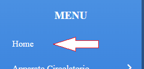
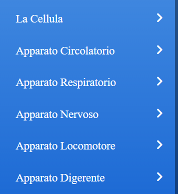
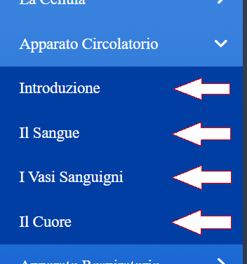
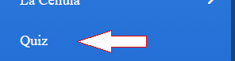
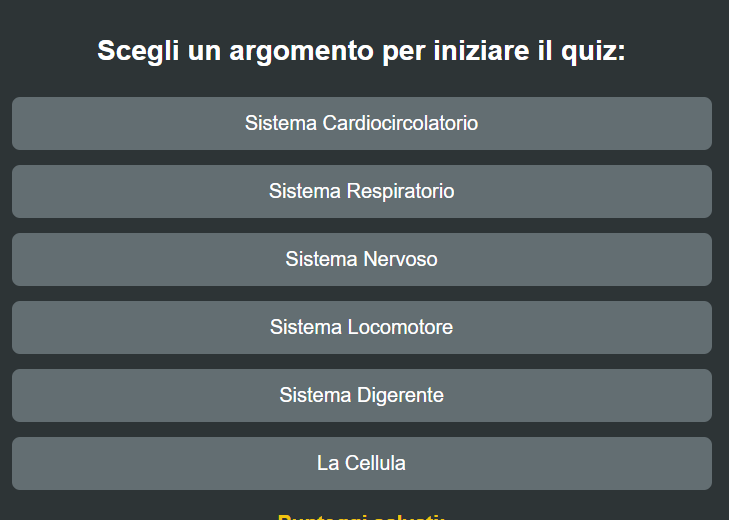
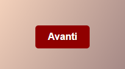
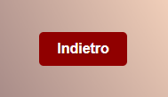

📖 Guida Passo-Passo

Pulsante Home: Cliccando questo pulsante tornerai alla schermata iniziale di benvenuto.

Apparati: Subito sotto hai a disposizione i vari apparati a cui poter accedere

Scelta Argomento: Ogni apparato ha un sottomenù a tendina nella quale potrai scegliere uno specifico argomento.

Pulsante Quiz: Cliccando questo pulsante verrà mostrata la schermata dei quiz divisi per argomento.

Scelta Argomento: Una volta scelto l'argomento verranno mostrate 10 domande a scelta multipla a cui dover rispondere.
Concluse le domande verrà calcolato il punteggio relativo all'argomento scelto.
Pulsante Reset: Con questo pulsante si potranno resettare tutti i punteggi ottenuti.
Pulsante Crediti: Visualizzazione e descrizione dei creatori del programma con i rispettivi ruoli.
Pulsante Esci: Questo pulsante chiuderà il programma facendoti uscire e tornare alla schermata di avvio.

Pulsante Avanti: Questo pulsante è presente solo all'interno delle varie slide.
Posizionato in basso a destra ti da la possibilità di scorrere avanti tra le slide.

Pulsante Indietro: Questo pulsante è presente solo all'interno delle varie slide.
Posizionato in basso a sinistra ti da la possibilità di scorrere indietro tra le slide.